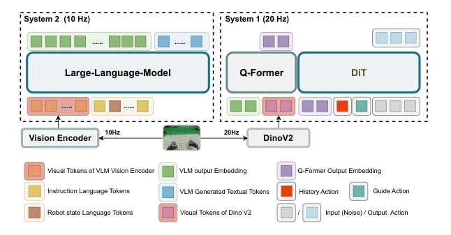
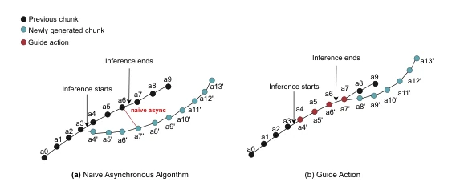
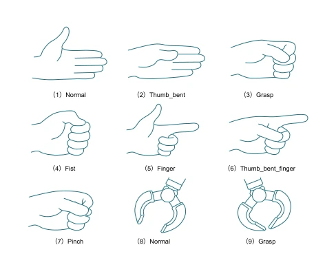
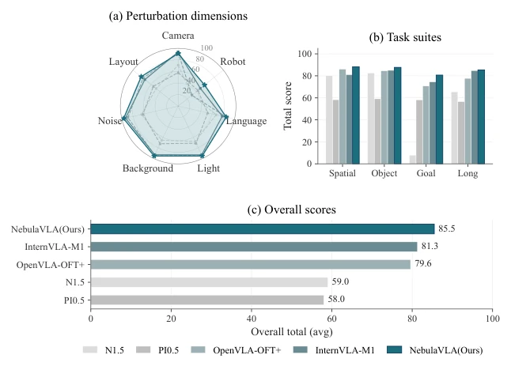
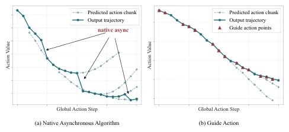

NebulaVLA attempts to perform surgery on VLA models using a 'dual-frequency' architecture, decoupling slow thinking (System 2) and fast response (System 1) to resolve the trade-off between efficiency and performance. GESTURE-7 unifies action semantics across different robotic arms using natural language keywords, which is quite clever, but Guide Action essentially adds mask constraints within diffusion denoising, resembling a patch for jitter rather than a fundamental cure. Although the 85.5% success rate on LIBERO-Plus is good and inference speed increased by 2.7 times, static frequency allocation may not be flexible enough in dynamic environments, and hardware synchronization is also an engineering pitfall. ZTE's move is considered stable, but it still falls short of 'perfection'.
Existing VLA models (such as RT-1 [3], OpenVLA [4], InternVLA [5]) face three major bottlenecks: a monolithic synchronous architecture cannot balance low-frequency semantics and high-frequency control, leading to rigid efficiency-performance trade-offs; cross-morphology generalization is difficult, discrete tokenization leads to large action spaces and poor semantic alignment, requiring large amounts of demonstration data [19, 20]; execution smoothness is poor, asynchronous inference and action block generation often cause jitter, existing post-processing smoothing cannot guarantee semantic consistency [23]. NebulaVLA aims to solve these problems by decoupling frequencies and unifying representations, achieving efficient response and smooth control.
The overall approach adopts a hierarchical fast-slow architecture. System 2 (10Hz) performs high-level semantic planning based on Qwen3-VL, System 1 (20Hz) performs low-level action control based on DiT. Training is divided into three stages: Stage 1 & 2 perform SFT and GRPO reinforcement learning on S2 to establish semantic planning, Stage 3 performs SFT on S1 and distills S2 priors. The core innovation is GESTURE-7, encoding end-effector state into a 7-dimensional vector [x,y,z,r,p,w,gesture], using natural language keywords (e.g., 'grasp') to unify different robot actions, supporting cross-morphology generalization. The Guide Action mechanism is inspired by image Outpainting, during diffusion denoising it forces retention of executed trajectory anchors via mask M (regions where M=1), only generating new regions (M=0), ensuring smooth transitions between blocks without post-processing smoothing. The loss function only calculates noise prediction error for the generated region, ensuring training and inference frequency alignment.

Figure 1: NebulaVLA Architecture. System 2 uses Qwen3-VL as backbone to output abstract action guidance from user instructions and sparse visual inputs. System 1 utilizes a Q-Former to compress S2’s guidance alongside high-frequency visual inputs, and ultimately outputs execution actions through a denoising process with a Diffusion Transformer.

Figure 2: Scheme of the Guide Action mechanism. (a) The naive asynchronous baseline performs a hard switch (red line) after inference ends, leading to execution jitter. (b) Guide Action utilizes unexecuted prior steps (red dots) to condition the generation of the subsequent chunk, ensuring seamless trajectory alignment.

Figure 5: Illustration of common gesture keywords in GESTURE-7 end-effector states. Subfigures (1–7) depict gestures for dexterous hand end-effectors, while subfigures (8–9) depict those for grip- per end-effectors.
Tested on LIBERO-Plus simulation and AgiBot A2 real robot. Baselines include InternVLA-M1, OpenVLA, etc. Metrics are success rate (SR), inference latency, and joint jerk (Jerk). NebulaVLA achieves SR of 85.5% on LIBERO-Plus, better than InternVLA-M1 (81.3%), real robot latency reduced to 42ms. Ablation shows SFT+RL improves layout and language dimensions, Guide Action significantly reduces joint jitter (average reduction of 25.6%), but performance slightly decreases under camera perturbations, attributed to GESTURE-7's assumption of fixed visual space mapping.

Figure 3: Simulation Result Comparison on Libero-Plus

Figure 4: Visualization of Guide Action Effectiveness